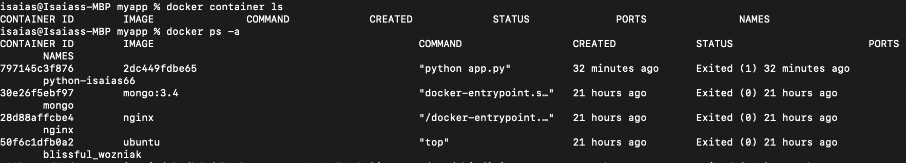

Lab 3 - Troubleshooting
Display running container type the command docker container ls
docker container lsDisplay all containers whether running or not, type command docker ps -a
docker ps -a
Display container logs, type the command docker logs [container ID or name]
docker logs [conainter ID or name]
Display running process in Windows OS, type command tasklist